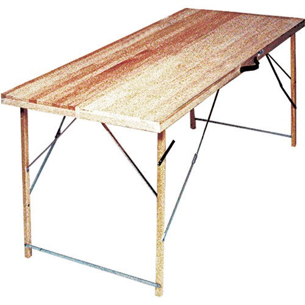

Prologue: first encounters


ヾ(⌐■_■)ノ♪
a, a b {
color: #BECAB6;
}
b, .n{
color: #8EADA8;
}
a:hover,a:hover b{
color: #DEDDBF;
text-decoration: none;
}
a.n:hover {
display: block;
width: 90px;
text-transform: UPPERCASE;
height: 60px;
font-family: tahoma, 'Tahoma', arial, serif;
font-size: 7.5pt;
line-height: 60px;
border: 3px #FFFFFF solid;
text-decoration: blink;
font-weight: normal;
text-align: center;
color: #ffffff;
background-color: #D3D05B;
}
a, a b {
color: red;
}
b, .n{
color: blue;
}
a:hover,a:hover b{
color: white;
....-..........: ....;
}
a.n:hover {
.......: .....;
.....: ....;
....-.........: .........;
......: ....;
....-......: ......, '......', ....., .....;
....-....: .....;
....-......: ....;
......: ... ...... .....;
....-.........: .....;
....-......: ......;
....-.....: ......;
color: magenta;
..........-.....: .....;
}
(╯T-T)╯︵ 
ノ( ゜-゜ノ)
"With great power comes great misunderstanding."Act II: a small victory
/* rows */
#row1, #row2, #row3, #row4, #row5, #row6, #row7, #row8, #row9, #row10, #row11, #row12, #row13, #row14, #row15, #row16, #row17, #row18, #row19, #row20 {
position: relative;
width: 20px;
clear: right;
display: block;
float: left;
margin: 0px;
padding: 0px;
opacity: 1;
}
#row1 {
left: 100px;
}
#row2 {
left: 120px;
}
#row3 {
left: 140px;
}
#row4 {
left: 160px;
}
#row5 {
left: 180px;
}
#row6 {
left: 200px;
}
#row7 {
left: 220px;
}
#row8 {
left: 240px;
}
#row9 {
left: 260px;
}
#row10 {
left: 280px;
}
#row11 {
left: 300px;
}
#row12 {
left: 320px;
}
#row13 {
left: 340px;
}
#row14 {
left: 360px;
}
#row15 {
left: 380px;
}
#row16 {
left: 400px;
}
#row17 {
left: 420px;
}
#row18 {
left: 440px;
}
#row19 {
left: 460px;
}
#row20 {
left: 480px;
}
Act V: the status quo

Example: Does
p.foo span or #bar .baz have higher precedence?
Answer:
¯\(º_o)/¯ (I answered wrong.)
CSS pre-processor:
Stylus
.some-page .inner .popup.specific-popup button.blue:hover
.blue-button:hover
(╯T-T)╯︵
ノ( ゜-゜ノ)
"With great power comes great CSS soup ."Act VI: hope
Starting over with CSS.